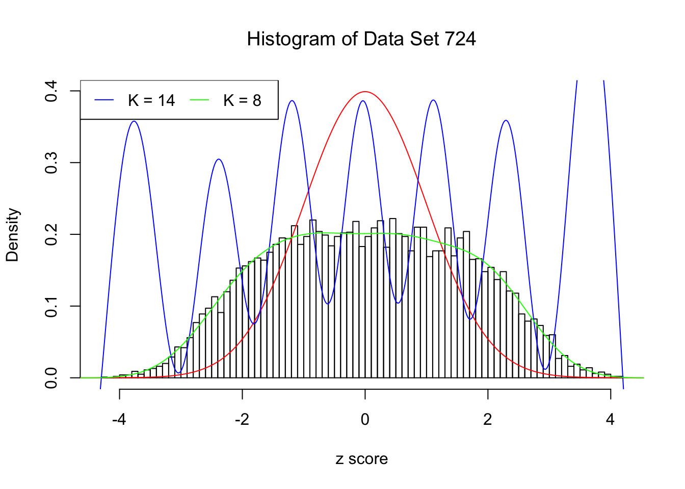
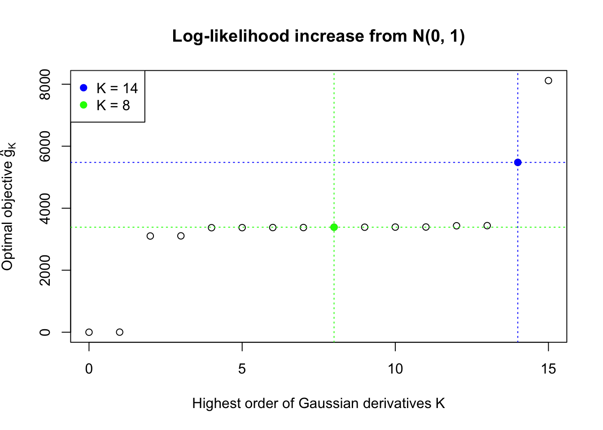
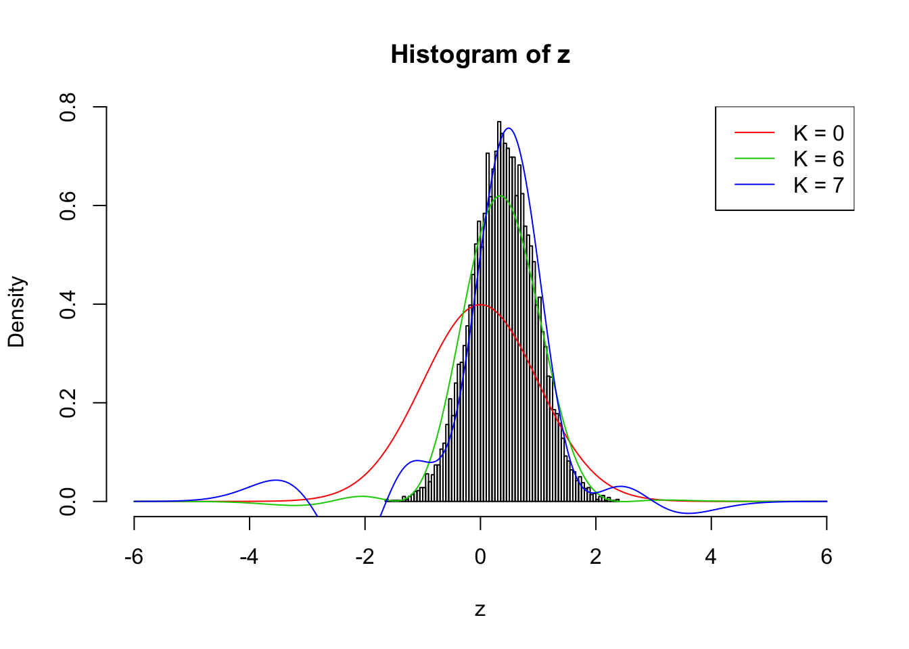

When fitting Gaussian derivatives, overfitting or heavy correlation may cause numerical instability. Most of the time, the numerical instability leads to ridiculous weights \(w_k\), making the fitted density break the nonnegativity constraint for \(x\neq z_i\)’s.
Let normalized weights \(W_k^s = W_k\sqrt{k!}\). As shown previously, under correlated null, the variance \(\text{var}(W_k^s) = \alpha_k = \bar{\rho_{ij}^k}\). Thus, under correlated null, the Gaussian derivative decomposition of the empirical distribution should have “reasonable” weights of similar decaying patterns. In other words, \(W_k^s\) with mean \(0\) and variance \(\bar{\rho_{ij}^k}\), should be in the order of \(\sqrt{\rho^K}\) with a \(\rho\in (0, 1)\).
This example shows that numerical instability is reflected in the number of Gaussian derivatives fitted \(K\) being too large, as well as in the normalized fitted weights of Gaussian derivatives \(\hat w_k\sqrt{k!}\) being completely out of order \(\sqrt{\rho^K}\).
source("../code/ecdfz.R")z = read.table("../output/z_null_liver_777.txt")
p = read.table("../output/p_null_liver_777.txt")library(ashr)
DataSet = c(522, 724)
res_DataSet = list()
for (i in 1:length(DataSet)) {
zscore = as.numeric(z[DataSet[i], ])
fit.ecdfz = ecdfz.optimal(zscore)
fit.ash = ash(zscore, 1, method = "fdr")
fit.ash.pi0 = get_pi0(fit.ash)
pvalue = as.numeric(p[DataSet[i], ])
fd.bh = sum(p.adjust(pvalue, method = "BH") <= 0.05)
res_DataSet[[i]] = list(DataSet = DataSet[i], fit.ecdfz = fit.ecdfz, fit.ash = fit.ash, fit.ash.pi0 = fit.ash.pi0, fd.bh = fd.bh, zscore = zscore, pvalue = pvalue)
}library(EQL)
x.pt = seq(-5, 5, 0.01)
H.pt = sapply(1:15, EQL::hermite, x = x.pt)Data Set 724 : Number of BH's False Discoveries: 79 ; ASH's pihat0 = 0.01606004Normalized Weights for K = 8:1 : 0.0359300698579203 ; 2 : 1.08855871642562 ; 3 : 0.0779368130366434 ; 4 : 0.345861286563959 ; 5 : 0.00912636957148547 ; 6 : -0.291318682290939 ; 7 : -0.0336534605417156 ; 8 : -0.19310963474206 ;Normalized Weights for K = 14:1 : -0.676936454061805 ; 2 : -9.24968885347997 ; 3 : -8.3124954075297 ; 4 : -87.0040400264205 ; 5 : -38.5774993866502 ; 6 : -327.811119421261 ; 7 : -92.5614572826525 ; 8 : -679.045197952641 ; 9 : -123.743821656837 ; 10 : -812.599139016504 ; 11 : -88.0469137351964 ; 12 : -530.268674468285 ; 13 : -26.1051054428588 ; 14 : -146.98364434743 ;
Therefore, we can impose regularity in the fitted Gaussian derivatives by imposing constraints on \(w_k\). A good set of weights should have following properties.
As Prof. Peter McCullagh pointed out during a chat, there should be a rich literature discussing the non-negativity / positivity condition for Gaussian derivative decomposition, also known as Edgeworth expansion. This could potentially be a direction to look at.
An approximation to the non-negativity constraint may come from the fact that due to orthogonality of Hermite polynomials,
\[ W_k = \frac{1}{k!}\int_{-\infty}^\infty f_0(x)h_k(x)dx \ . \] Therefore, if \(f_0\) is truly a proper density,
\[ \begin{array}{rclcl} W_1 &=& \frac{1}{1!}\int_{-\infty}^\infty f_0(x)h_1(x)dx = \int_{-\infty}^\infty x f_0(x)dx &=& E[X]_{F_0} \\ W_2 &=& \frac{1}{2!}\int_{-\infty}^\infty f_0(x)h_1(x)dx = \frac12\int_{-\infty}^\infty (x^2-1) f_0(x)dx &=& \frac12E[X^2]_{F_0} -\frac12\\ W_3 &=& \frac{1}{3!}\int_{-\infty}^\infty f_0(x)h_1(x)dx = \frac16\int_{-\infty}^\infty (x^3-3x) f_0(x)dx &=& \frac16E[X^3]_{F_0} -\frac12E[X]_{F_0}\\ W_4 &=& \frac{1}{4!}\int_{-\infty}^\infty f_0(x)h_1(x)dx = \frac1{24}\int_{-\infty}^\infty (x^4-6x^2+3) f_0(x)dx &=& \frac1{24}E[X^4]_{F_0} -\frac14E[X^2]_{F_0} + \frac18\\ &\vdots& \end{array} \] Note that \(F_0\) is not the empirical cdf \(\hat F\), even if we’ve taken into consideration that \(N\) is sufficiently large, and the correlation structure is solely determined by \(W_k\)’s and Gaussian derivatives. \(F_0\) is inherently continuous, whereas the empirical cdf \(\hat F\) is inherently non-differentiable. This implies that the mean of \(F_0\), \(E[X]_{F_0} \neq \bar X\), the mean of the empirical cdf \(\hat F\). \(W_k\)’s are still parameters of \(F_0\) that are not readily determined even given the observations (hence given the empirical cdf).
This relationship inspires the following two ways to constraint \(W_k\)’s.
Instead of using maxmimum likelihood estimates of \(f_0\), that is, \(\max\sum\limits_{i = 1}^n\log\left(\sum\limits_{k = 1}^\infty w_kh_k(z_i) + 1\right)\), we may use method of moments estimates:
\[ \begin{array}{rcl} w_1 &=& \hat E[X]_{F_0}\\ w_2 &=& \frac12\hat E[X^2]_{F_0} -\frac12\\ w_3 &=& \frac16\hat E[X^3]_{F_0} -\frac12\hat E[X]_{F_0}\\ w_4 &=& \frac1{24}\hat E[X^4]_{F_0} -\frac14\hat E[X^2]_{F_0} + \frac18\\ &\vdots&\\ w_k &=& \cdots \end{array} \]
Another way is to constraint the weights by the properties of the moments to prevent them going crazy, such that
\[ W_2 = \frac12E[X^2]_{F_0} -\frac12 \Rightarrow w_2 \geq -\frac12 \ . \]
We may also combine the moment estimates and constraints like
\[ \begin{array}{rcl} w_1 &=& \hat E[X]_{F_0}\\ w_2 &\geq& -\frac12\\ &\vdots& \end{array} \]
Right now using the current implementation the results are disappointing. Using the constraint on \(w_2\) usually makes the optimization unstable. Using moment estimates on \(w_1\) and \(w_2\) performs better, but only sporadically.
Here we are re-running the optimization on the previous \(\rho_{ij} \equiv 0.7\) example with \(\hat w_1\) and \(\hat w_2\) estimated by the method of moments. Without this tweak current implementation can only work up to \(K = 3\), which is obviously insufficient. Now it can go up to \(K = 6\). \(K = 7\) doesn’t look good, although making some improvement compared with \(K = 6\).
The results are not particularly encouraging. Right now we’ll leave it here.
rho = 0.7
set.seed(777)
n = 1e4
z = rnorm(1) * sqrt(rho) + rnorm(n) * sqrt(1 - rho)
w.3 = list()
for (ord in 6:7) {
H = sapply(1 : ord, EQL::hermite, x = z)
w <- Variable(ord - 2)
w1 = mean(z)
w2 = mean(z^2) / 2 - .5
H2w = H[, 1:2] %*% c(w1, w2)
objective <- Maximize(SumEntries(Log(H[, 3:ord] %*% w + H2w + 1)))
prob <- Problem(objective)
capture.output(result <- solve(prob), file = "/dev/null")
w.3[[ord - 5]] = c(w1, w2, result$primal_values[[1]])
}
Weights \(w_k\) are of central importance in the algorithm. They contain the information regarding whether the composition of Gaussian derivatives is a proper density function, and if it is, whether it’s a correlated null. We need to find an ingenious way to impose appropriate constraints on \(w_k\).
sessionInfo()R version 3.3.2 (2016-10-31)
Platform: x86_64-apple-darwin13.4.0 (64-bit)
Running under: macOS Sierra 10.12.4
locale:
[1] en_US.UTF-8/en_US.UTF-8/en_US.UTF-8/C/en_US.UTF-8/en_US.UTF-8
attached base packages:
[1] stats graphics grDevices utils datasets methods base
other attached packages:
[1] ashr_2.1.5 cvxr_0.0.0.9009 EQL_1.0-0 ttutils_1.0-1
loaded via a namespace (and not attached):
[1] Rcpp_0.12.10 knitr_1.15.1 magrittr_1.5
[4] MASS_7.3-45 pscl_1.4.9 doParallel_1.0.10
[7] SQUAREM_2016.10-1 lattice_0.20-34 R6_2.2.0
[10] foreach_1.4.3 stringr_1.1.0 tools_3.3.2
[13] parallel_3.3.2 grid_3.3.2 htmltools_0.3.5
[16] iterators_1.0.8 yaml_2.1.14 rprojroot_1.2
[19] digest_0.6.9 Matrix_1.2-7.1 codetools_0.2-15
[22] evaluate_0.10 rmarkdown_1.3 stringi_1.1.2
[25] backports_1.0.5 truncnorm_1.0-7 This R Markdown site was created with workflowr